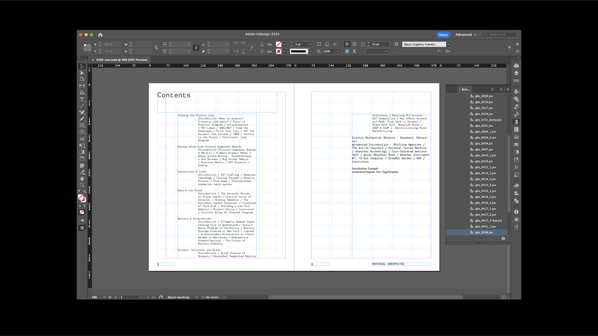
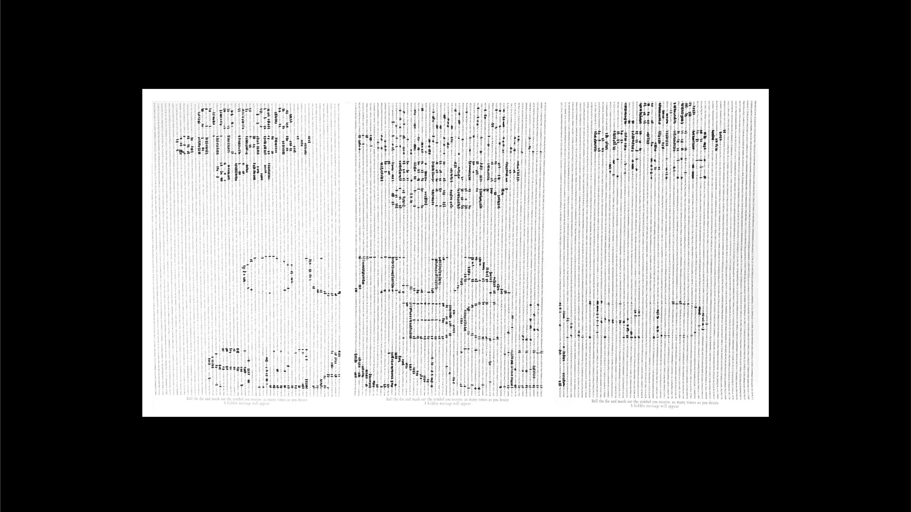
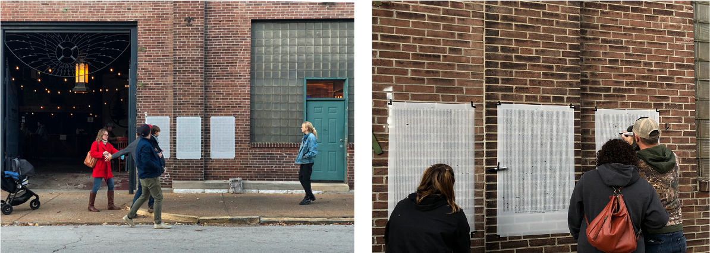
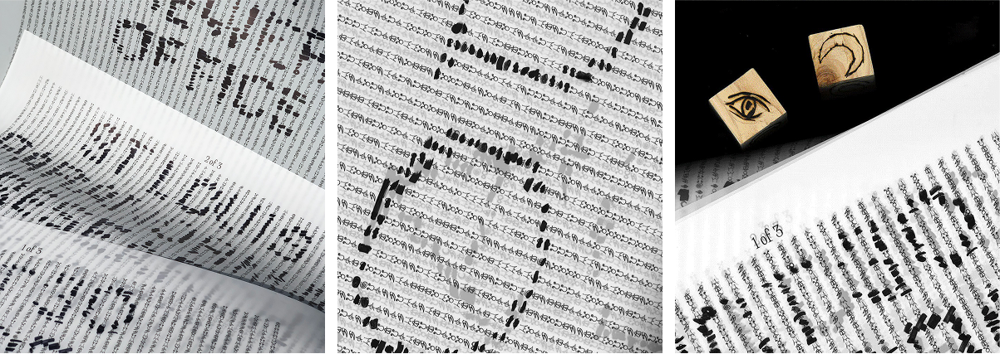
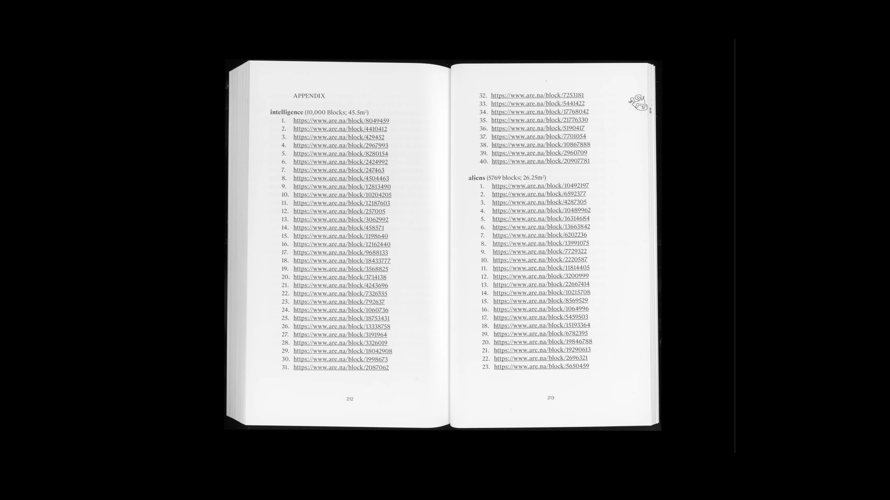
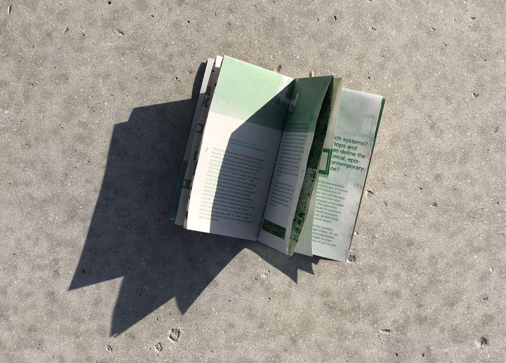
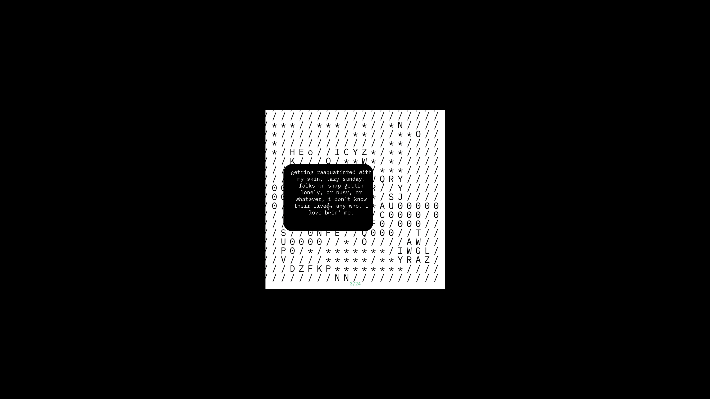

Generative Book Sprint Helper[Working] InDesign script for programmatic book design.Advisor: Daragh Byrne. In-progress code for an InDesign script that programmatically lays out the contents of a book, based on a design system adapted from a prior studio course. |

Ouija Board SeanceParticipatory installation advertising a seance; three 24 × 36" posters.Collaborator: Betsy Ellison Inspired by Moniker’s Your Line or Mine and Clement Valla’s Mechanical Turk Alphabets, Betsy and I designed a set of three posters promoting a ouija board seance hosted by the St. Louis Paranormal Research Society (we are not affiliated). Each of the three posters is integral to the legibility of the message as a whole, with the sole instruction, “Roll the die and mark out the symbol you receive, as many times as you desire. A hidden message will appear.” Starting off as a blank slate, the set plays with the illusion of endless possibility in its densely textured grid of seemingly random symbols. With each letter consisting of several individually “chosen” marks, event info emerges as the result of strangers’ collaboration over the span of a day.  |

Labs SocialSocial strategy & content, curation, and community management for labs.google.Team & Generous Testers: Brianna Doyle, Trudy Painter, Soyeon Kim, Shashwath Santosh, Sam Lawton (virtual IFSC). Jamie Barrar, James Scott, Beatriz Lozano, Kory Mathewson, Allan Holmes (in-person IFSC test) Concept development and facilitation of experimental workshops and events for the budding labs.google Discord community in its early days:
Also produced creative coding sketches using Google Labs’ AI Test Kitchen tools (ImageFX, TextFX, MusicFX, and ShiffBot) to explore workflows incorporating synthesized media. |
|  |

This book you are holding is a junkyardA personal take on carving a form for an essay about malware; 3.5 × 6.5" newsprint booklet.Jussi Parikka’s essay, “Malware as Operational Art: On the If/Then of Geopolitics and Tricksters,” encourages a reconsideration of glitches and instances of computer failure as the norm. The structure of this book references the skeletal syntax of the web and the layered, nested anatomy of HTML. Smaller moves — the unravelling typography and cut paper revealing a computer-generated texture on the inner folds — seek to reinforce this theme of perceived danger, offering an uneasy, anti-reader friendly experience. 
|

memory gardenA collection of anonymous memories; 400 × 400 px.A speculative sketch of an online memory archive comprising anonymous memories submitted to the little memory, a mobile journaling app. |